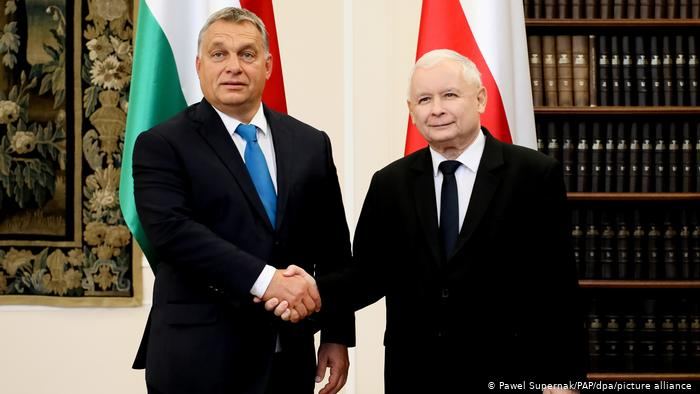

Backsliding Democracies
Backsliding democracies are democratic countries which are begninning to slide into Authoritarianism. One of the most common techniques they use is the supression of media and opposition organisation. They may not outright ban these organisations but they create enough restrictions that it becomes very hard to join one or create one. These governments may also start limiting the powers of the other branches of government, influecning the courts or giving themsleves additional powers. Backsliding democracies are typically populist, relying on nationalism and popular legislation to legitimise themselves and to divert attention from their actual plans.
Rise in Backsliding Democracies
In the past years, especially in the wake of the 2008 global financial crisis, populist parties and leaders have gained in popularity due to their anti-elitist rhetoric, who many saw as the main perpetrators of the crisis. As many people lost their money and their homes, they turned to reatcionaries to help their problems.
Russia
During the unstable first years of the Russian Democracy, Vladimir Putin became acting president after the previous president, Yeltsin, resigned. This was during the Chenyan wars significantlly boosting Putin's approval ratings. He subsequently won the presidnetial election and began reforming the country in his image. He passed laws limiting invetsigation into his office. He got Russian oligarchs on his side and if they would not accept they were assasinated. He limited the freedoms of press and assembly, using justifications such as "disrespect of authorities" and "extremism" to ban non-government controled media. Finally he limited the people who could run in elections. As of today there is no party in the Russian Duma which does not officially oppose Putin.
India
After the election of the Hindu-nationalist BJP party in 2014, the party began dismanteling the secular institutions of the Republic. One of its controversial laws was one regarding citizenship of refugees from Pakistan and Afghanistan, the law would directly discriminate against people on the crteria of religion. Whilst definately still more democratic than countries such as russia, it is slowly decreasing in freedoms and democracy. In 2020 it slipped to 53rd place from 27th place in the democracy ranking.
Poland and Hungary
Hungary and Poland have both instated limitations on the freedom of press and minorities. Poland has even gone as far as creating LGBTQ free zones, even though it is only symbolic it still says a lot. In hungary the government has limited the courts ability to keep them accountable by essentially bringing them under government control, similar things have also happened in Poland.